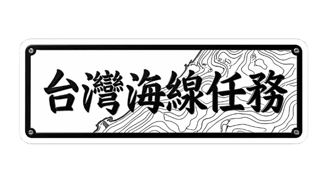
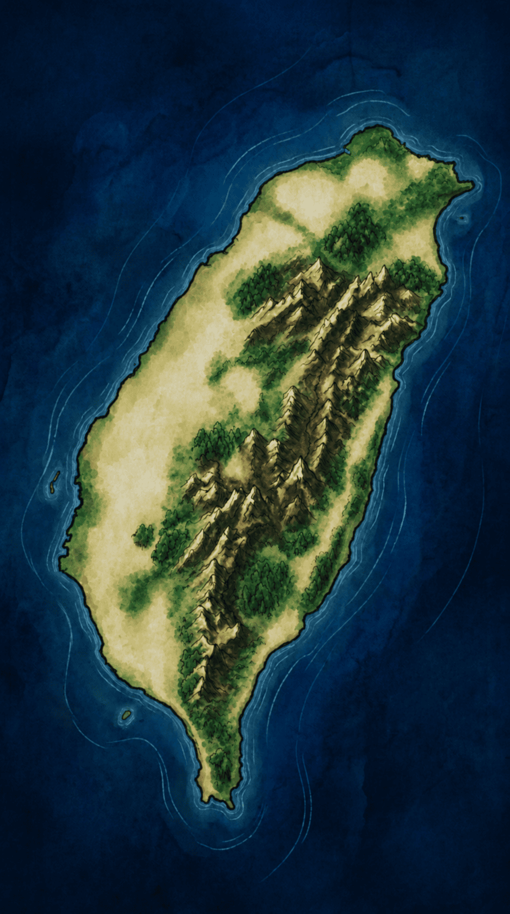

點擊畫面開場

Presented by Eric
不要跳過 >>

台灣海線任務
🔊
📊
🔒
八斗子
🔒
南方澳
🔒
龍鳳
🔒
梧棲
🔒
安平
🔒
東港
⛵
👆 點選地圖上
的漁港出發
難度選擇
新手
標準
專業
⚓ 守護漁港
守護員暱稱
簡介說明
新手教學
© 2026 海紋守護團 ·
聯絡作者
✕
聯絡作者
歡迎留下您的想法或回饋
名字（選填）
聯絡方式（選填）
留言內容（必填）
送出留言
🎵
我的海紋收集
📊
出牌紀錄
📋 複製
關閉
X
1 / 6
✕
聯絡我們
歡迎留下您的想法或回饋
名字（選填）
電子信箱（選填）
留言內容（必填）
送出留言
X
1 / 18
海紋守護團：台灣海線任務
剩餘召喚卡: --
📜出牌記錄
▲ 上滑/左滑/右滑選牌
🔍 尋找守護員...
等待中...